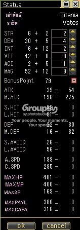

หน้า 1 จากทั้งหมด 2
เรื่อง status ของ vates

โพสต์แล้ว:
อาทิตย์ 25 พ.ย. 2007 9:02 pmโดย ECO

คือเราเล่ง vates เวล 49 แร้ว อีกเวล 1 ก้จาเปลี่ยนเปงดรูอิดแร้ว
อยากถามว่าพอยที่เหลือ 79 พอยควรเอาไปลงที่ mag หรือ dex หรือ vit ค่ะ
เราควรลง dex ต่ออีก 20 หัย c.spd ถึง 400 ไปเรย รึว่า อัพ mag กะ vit เพิ่มดีค่ะ
เราควรใช้พอยพวกนี้ก่อนเปลี่ยน จ๊อป 2 หรือป่าวค่ะ
ป.ล ได้ยินว่าพอเปลี่ยนขึ้น จ๊อป 2 แร้วจาได้เลือดเพิ่ม
ช่วยแนะนำด้วยนาค่ะ
โพสต์แล้ว:
จันทร์ 26 พ.ย. 2007 8:10 amโดย ECO
:oops: แนะนำให้อัพค่า MAG + DEX ค่ะ
ตอนนี้มี 79 แต้มใช่มั้ยคะ อัพค่า DEX ให้ได้สักประมาณ 30 ก็ได้ค่ะ
ที่เหลือก็เอาไปอัพค่า MAG ค่ะ จะได้ฮิลแรงขึ้น
โพสต์แล้ว:
จันทร์ 26 พ.ย. 2007 5:54 pmโดย ECO
คือว่าลองเอาพอยทั้งหมด 79 พอยไปใส่ dex ดูแร้วค่ะ
ได้ dex 35 c.spd 370 แต่พอยม่ายเหลือไปอัพ mag เรยค่ะ
(แต่ยังม่ายได้รวมกับพอยของเวล 50ที่กะลังจาได้ เพราะตอนนี้เวล 49 อยุ่กะลังจาเวล 50 ค่ะ)
ควรจาลด dex ลงไหมค่ะ หรือว่าควรรวมกับพอยของเวล 50 หัยได้ dex 40 c.spd 400 :?:
ช่วแนะนำด้วยค่ะ
ป.ล vates ควรอัพ dex 40 ไหมค่ะ
โพสต์แล้ว:
จันทร์ 26 พ.ย. 2007 6:06 pmโดย ECO
dex 30 ก็พอเน้อที่เหลือลง mag
โพสต์แล้ว:
จันทร์ 26 พ.ย. 2007 6:10 pmโดย ECO
อีกทางนึงให้แบ่งลง vit เพื่อที่เลือดจะได้เยอะๆเวลาไปหาตี้แม็ฟโหดๆจะได้ไม่โดนมอนสอยร่วงเอาง่ายๆ อย่างแม็ฟฟุชิกิ โจรผอมร่ายเวททีโดนแรงเอาเรื่องอยู่นา ถ้าอยากเก็บเวลได้นานๆเรื่อยๆควรจะมีเลือดด้วยสักหน่อยนะ
โพสต์แล้ว:
อังคาร 27 พ.ย. 2007 5:30 pmโดย ECO
ก่อนเปลี่ยนเปงดรูอิดนี่อัพ mag + vit ไปก่อน แร้วค่อยใส่ dex ตอนเปงดรูอิดจาดีกว่าไหมค่ะ
ป.ล ขอโทดที่ถามมากนะค่ะ
โพสต์แล้ว:
อังคาร 27 พ.ย. 2007 5:39 pmโดย ECO
ผมแนะนำ Vit Mag Int=Dex
เลือดควรได้ อย่างต่ำๆ ประมาณ 1500 จะได้ถึกๆ โดนมอนตอบไม่ตายง่ายๆ
จำได้ว่าค่า Heal ( ปกติหลังๆ เปลี่ยนคลาสจะใช้ Ares มากกว่า) จะขึ้นกะ ค่าเลือดเราด้วย
โพสต์แล้ว:
อังคาร 27 พ.ย. 2007 5:45 pmโดย ECO
ลืมบอก ท่าต่างๆ ไม่มีที่ร่ายนานๆนะ DEX แค่นี้หรือจะเพิ่มถึง30ก็น่าจะพอแล้ว
โพสต์แล้ว:
อังคาร 27 พ.ย. 2007 8:29 pmโดย ECO
Aussibum เขียน:
ลืมบอก ท่าต่างๆ ไม่มีที่ร่ายนานๆนะ DEX แค่นี้หรือจะเพิ่มถึง30ก็น่าจะพอแล้ว
Holy Feather... -*-
โพสต์แล้ว:
พุธ 28 พ.ย. 2007 12:43 amโดย ECO
Holy Feather จะร่ายค่อนข้างนานครับ(5-6 วิ)
ก็มีทางเลือกได้หลายทางน่ะครับ
Mag > Vit > Dex
Mag > Dex > Vit
แล้วแต่จะเลือกด้วยครับว่าถนัดแบบไหน
โพสต์แล้ว:
พุธ 28 พ.ย. 2007 9:22 amโดย ECO
Holy Feather ใครเค้าให้ร่ายตอนรุมหล่ะ เค้าบัฟกันก่อนจะเข้าไปลุย
ปล. เรื่อง Status ก็แล้วแต่คน เพราะ พระในริงผม อับสาย Vit นำ เวลาไป
ก็จะไปลากเป็นปกติ
อย่างที่ผมไป ก็ หอแสงที่ทุ่งข้างล่างที่มี ยักดำ กะแพลตินัม ผมไปก็ร่ายDef+MDef แล้วพระก็ลากสัก8-9ตัว เสร็จ เมื่อได้พอควร ก็หยุดแล้วร่ายเพลง ที่เพิ่ม Def MDef อีกชั้น พระโดนตีทีเข้าสัก 10-30กว่า เอง
แถมตอนโดนรุม ถ้าเกิดผมดับ(เป็นซอ เลยร่วงง่าย) พระยังสามารถ ชุบได้ โดยที่ยัง ทนต่อการถูกมอนตี รุม5-6ตัว (ยักดำ+แพลตินัม)
ผมยกมาให้เป็นกรณีศึกษา ในแนวทาง อีก Status นึง
โพสต์แล้ว:
พุธ 28 พ.ย. 2007 9:32 pmโดย ECO
dex 20 (ปัจุบัน) ถ้าอัพหัยเปง dex 30 มันจาร่ายเรวขึ้นเท่าไรค่ะ
ป.ล ตอนนี้จ๊อป 50 แร้ว >o<
โพสต์แล้ว:
ศุกร์ 30 พ.ย. 2007 4:58 amโดย ECO
คนเล่น Dex เยอะแฮะ
เราสาย Mag Vit เน้นๆ -v-"
โพสต์แล้ว:
พฤหัสฯ. 06 ธ.ค. 2007 12:35 pmโดย ECO
เราเล่นมาจนเวล57 แระ ยังไม่ได้อัพ dex สักแอะเรย ร่ายอย่างช้า
ไปอัพ Vit กะ Mag แค่นี้ - -* ไม่ควรเอาเป็นเยี่ยงอย่างเอิ๊กๆๆ
โพสต์แล้ว:
พฤหัสฯ. 06 ธ.ค. 2007 1:57 pmโดย ECO
ผมว่า dex ไม่ค่อยมีประโยชน์เท่าไร ถ้าเทียบกับ mag (เพราะเคยอัพ dex 90 รวมบัพ ก็ c.spd 800 ร่าย holyfeather ~ 1.5 วิ ร่าย ฮีล/บัพ แทบไม่มีดีเลย์ แต่ค่า mag น้อย ฮีลเบาๆ ฮีลไม่ทันใจเลย) ถ้าสิงอย่างเดียว dex ยิ่งไม่ค่อยมีประโยชน์เลย
เป็นพระ ฮีลสำคัญสุดล่ะ
ถ้าเป็นผมนะ: ดูจาก status ตอนนี้ ผมแนะนำmagโลด ค่าdexน้อย ลงdexไปแทบไม่เห็นผล :P